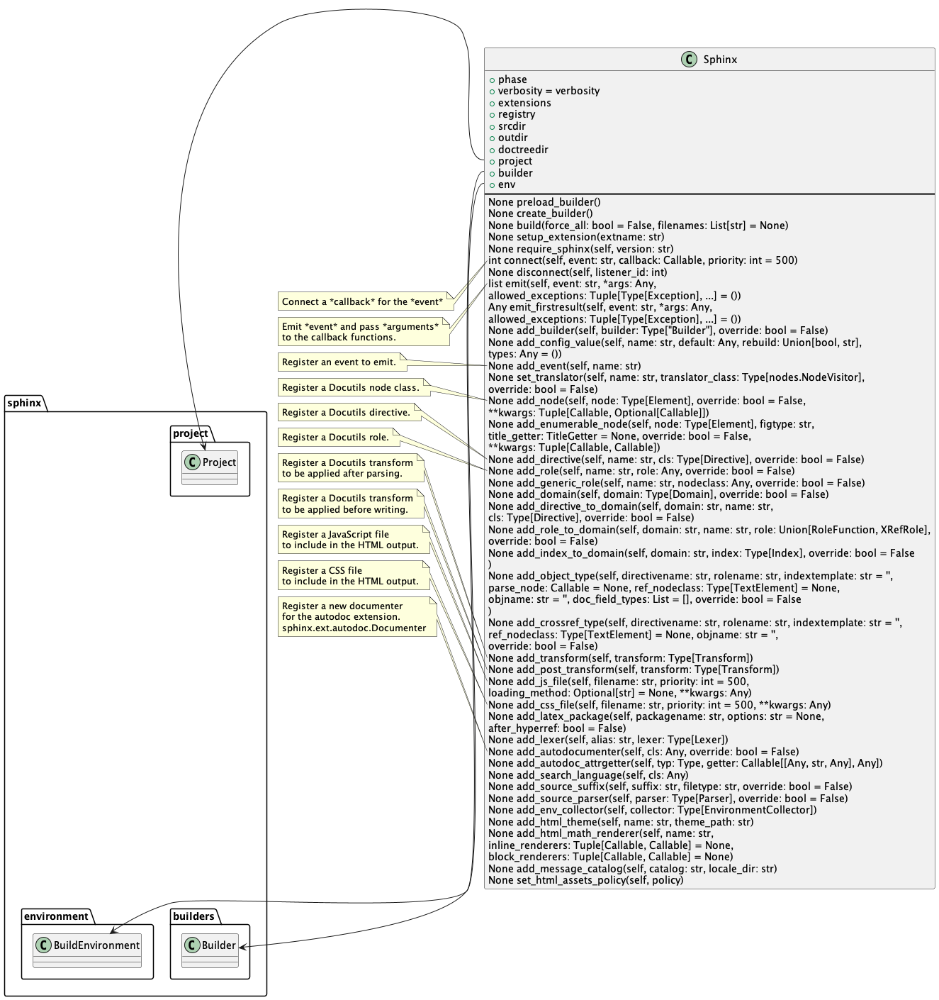
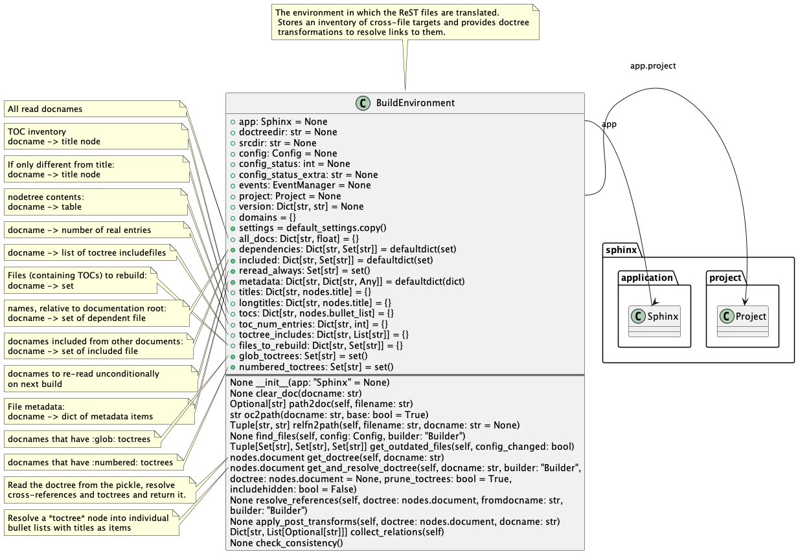

Warning
This draft documentation is under development.
Sphinx Research¶
Research environment¶
For the research purposes, let us build documentation using the following environment:
Create a separate folder
__test/. You can add it to the.gitignorefile to exclude this folder from the Git track.In this folder, create a reST file called
index.rstcontaining two sections with headers and plain text.In the
__test/folder, create two subfoldersfolder1/andfolder2/, each containing anindex.rstfile.In the root file (
__test/index.rst), add thetoctreedirective and add references to the the other two index files.Copy the
Makefilefile to the__test/folder and edit the line that runs thesphinx-buildscript to make it look as follows:%: Makefile $(SPHINXBUILD) -b $@ "$(SOURCEDIR)" "$(BUILDDIR)" $(SPHINXOPTS) $(O) -a -C -v
The project uses the following command line arguments:
-a: run the build process for all files, that is, update the HTML files whether the source files were updated or not. Sphinx will use pickled files processed by Docutils.-C: don’t require the config file.-v: provide more details than usually. You can use-vvor even-vvv, but this would clutter your screen with excessive data.
Preliminary process¶
Let us consider the doc build process from the beginning:
Start the doc build process from the
__test/folder:$ make dirhtml
This means you choose the
dirhtmlSphinx builder to create your final documentation.In accordance with
Makefile, this command invokes:./sphinx-build -b dirhtml "." "_build" -a -C -v
where:
“.” is the documentation source.
“_build” is the destination folder where the built documentation must be saved in the
dirhtmlsubfolder.
If you look inside the
sphinx-buildpython file (find it usingwhich sphinx-build), you will see nothing special, but calling thesphinx.cmd.build.mainmodule.This way, you come to the
sphinx/cmd/build.pymodule. Itsmainfunction checks if the-Moption exists. If it does, this function callssphinx.cmd.build.make_main, which callssphinx.cmd.make_mode.run_make_mode.If it you use
-binstead of-M, you will go tosphinx.cmd.build.build_main. Let us consider this way.The
sphinx.cmd.build.build_mainfunction starts parsing the command line in the following order:The
sphinx.cmd.build.get_parserfunction creates anargparse.ArgumentParserobject (not a Sphinx class) calledparserwith theusage,epilog, anddescriptionarguments. Then it adds many other Sphinx related arguments to this object.Creates a validated list of all argument:
args = parser.parse_args(argv)
argsis an object of theargparse.Namespaceclass with the following content for the considered example (important for your further analysis of the program):Namespace(sourcedir='.', outputdir='_build', filenames=[], builder='dirhtml', force_all=True, freshenv=False, doctreedir=None, jobs=1, confdir=None, noconfig=True, define=[], htmldefine=[], tags=[], nitpicky=False, verbosity=1, quiet=False, really_quiet=False, color='auto', warnfile=None, warningiserror=False, keep_going=False, traceback=False, pdb=False)
It also creates
doctreedir='_build/.doctrees'to save pickled files. Pay attention to some of those arguments that affect the process:sourcedir='.', outputdir='_build', builder='dirhtml', force_all=True, doctreedir='_build/.doctrees', jobs=1
The
sphinx.cmd.build.build_mainfunction creates the main project objectappusing theargsproperties and starts the object’s build process:app = Sphinx(args.sourcedir, args.confdir, args.outputdir, args.doctreedir, args.builder, confoverrides, status, warning, args.freshenv, args.warningiserror, args.tags, args.verbosity, args.jobs, args.keep_going) app.build(args.force_all, filenames)
The app object created from the Sphinx class has many properties and methods used while building the project:

Some of the most important properties are formed from the args object that you met in the previous steps:
self.srcdir = abspath(srcdir)
self.outdir = abspath(outdir)
self.doctreedir = abspath(doctreedir)
self.builder = self.create_builder(buildername)
self.builder is an object of class sphinx.builders.Builder that the app will use to build the documentation.
Notice that the buildername argument is the args.builder (dirhtml in this project) property created in a
previous step. This project will create the app.builder object from
the DirectoryHTMLBuilder class that extends subsequently
the sphinx.builders.html.StandaloneHTMLBuilder and sphinx.builders.Builder classes:
The app initialization process sets up the building environment:

Main build process¶
Now you can track the main build process.
The
app.build(args.force_all, filenames)method starts processing the project. The process has the following phases declared in thesphinx.util.build_phase.BuildPhaseenum class:class BuildPhase(IntEnum): """Build phase of Sphinx application.""" INITIALIZATION = 1 READING = 2 CONSISTENCY_CHECK = 3 RESOLVING = 3 WRITING = 4
The
app.buildmethod switches the app from the INITIALIZATION (the phase after the object initialization) to the READING phase.As you required to build all files, the
app.buildmethod goes to the following branch:self.builder.compile_all_catalogs() self.builder.build_all()
The first statement goes through a chain of localization calls starting with
sphinx.builders.Builder.compile_all_catalogs. As this simple project is based on English, the result of these calls is the printout similar to this:building [mo]: all of 0 po files
The second statement starts the documentation build process using the
sphinx.builders.Builder.build_allmethod. This method calls thesphinx.builders.Builder.buildmethod for building all documents:self.build(None, summary=__('all source files'), method='all')
The
sphinx.builders.Builder.buildmethod does the following:Print out the message “building [dirhtml]: all source files”
Read the documents this way:
with logging.pending_warnings(): updated_docnames = set(self.read())
The
sphinx.builders.Builder.readmethod reads all source files. It prints out the message starting with:updating environment:
Get the added, changed, and removed files. If you run the process without changing reST files, you will see the message:
0 added, 0 changed, 0 removed
Otherwise, You will see the other numbers.
Calls the
sphinx.builders.Builder.writemethod with a list of documents:self.write(docnames, list(updated_docnames), method)
At this point, it makes sense to split the process in two branches, one without added, updated, and removed files and the other with at least one updated file.
Using pickled files¶
Let us consider a process that requires building documents even though they are not updated.
The
sphinx.builders.Builder.write(build_docnames, updated_docnames, method)method performs the following operations:Define the files to be processed. In this project, the method finds out the all files must be processed using this conditional block:
if build_docnames is None or build_docnames == ['__all__']: # build_all build_docnames = self.env.found_docs
In this project, the
build_docnamesvariable is equal to{'index'}, which corresponds to the root source fileindex.rst. If you create two foldersfolder1andfolder2with index files, this value will be{'index', 'folder1/index', 'folder2/index'}.Start the
sphinx.builders.Builder._write_serial(sorted(docnames))method to process the source documents.
The
sphinx.builders.Builder._write_serial(sorted(docnames))method goes through the following phases for every document (docname) in thedocnameslist:Starts the
BuildPhase.RESOLVINGphase, where it resolves the doctree:doctree = self.env.get_and_resolve_doctree(docname, self)
The
doctreefor each of the three files of the project looks as follows (the real path is replaces with placeholderabs_path; the output is formatted manually for better readability):folder1/index:
<document source="/abs_path/__test/folder1/index.rst"> <section ids="folder-1-index-file" names="folder\ 1\ index\ file"> <title>Folder 1 Index File</title> <paragraph>File content of the Folder 1 index is here.</paragraph> </section> </document>
folder2/index:
<document source="/abs_path/__test/folder2/index.rst"> <section ids="folder-2-index-file" names="folder\ 2\ index\ file"> <title>Folder 2 Index File</title> <paragraph>File content of the Folder 2 index is here.</paragraph> </section> </document>
index:
<document source="/abs_path/__test/index.rst"> <section ids="using-documentation-generator" names="using\ documentation\ generator"> <title>Using documentation generator</title> <compound classes="['toctree-wrapper']"/> <paragraph>There are two software products ...cut for brevity... to distinguish it.</paragraph> <section ids="introduction" names="introduction"> <title>Introduction</title> <paragraph>Sphinx is a powerful ...cut for brevity... this documentation.</paragraph> <paragraph>The examples are ...cut for brevity... the proper changes.</paragraph> </section> <section ids="additional-resources" names="additional\ resources"> <title>Additional resources</title> <paragraph>This book does not cover ...cut for brevity... resources, for example:</paragraph> </section> </section> </document>
Note that the root index file contains the
tocdirective represented with the<compound classes="['toctree-wrapper']"/>node.Changes the
appphase toBuildPhase.WRITING, where it starts the write process:self.write_doc_serialized(docname, doctree) # For parallel processing, not used in the current project self.write_doc(docname, doctree)
The
write_docmethod is overwritten in the child class, so it actually issphinx.builders.html.StandaloneHTMLBuilder.write_doc(docname, doctree).
Building updated files¶
The most often used case is when at least one file is updated, the Sphinx initiated the full process with the updated files. For this process do the following minimal changes:
In
Makefile, remove the-aand-varguments in thesphinx-buildcommand.Update a file using the
touchcommand that changes only the file access time.
Accordingly you can start the process as follows:
$ touch folder1/index.rst; make dirhtml
To trace the process in a viewer, run the process at least one time with the tracer, as in this example:
$ touch folder1/index.rst; viztracer --ignore_c_function sphinx-build -b dirhtml "." "_build" -C
Note
You cannot use viztracer make dirhtml, because viztracer requires a python module called first,
whereas make is a binary executable file.
Using the result.json file, you can track the calls of Sphinx and Docutils functions and methods:
$ vizviewer result.json